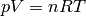

2. Marco Teórico¶
Debido a la naturaleza multidisciplinaria de este trabajo, posiblemente sea leído y evaluado por profesionales o interesados de/en las distintas áreas de incumbecia (química y computación).
Ver también
Dado que no necesariamente se tiene un conocimiento sólido fuera de la especificidad de la profesión, en este capítulo se presentarán conceptos generales (que no pretenten exhautividad pero sí precisión) de las dos áreas, útiles para la comprensión de este trabajo. Para definiciónes de términos puntuales, consulte el glosario.
2.1. Conceptos de equilibrio de fases y sus diagramas¶
2.1.1. Algunas definiciones¶
2.1.1.1. Diagrama de fase de sistemas binarios¶
Un diagrama de fase es un tipo de gráfico utilizado para mostrar las condiciones en las que distintas fases termodinámicas de un sistema pueden ocurrir en equilibrio. Se representa en función de variables que caracterizan el estado intesivo del sistema físicoquímico (funciones de estado).
El estudio introductorio de la termodinámica se centra en sustancias puras o mezclas a composición constante. En este caso, el sistema es descripto por dos variables. Un diagrama de fase típico para estos sistemas, es el Presión vs. temperatura :

La línea verde indica los puntos de congelamiento. La azul los de ebullición. La línea punteada muestra un comportamiento particular del agua.
Así, para determinada presión y temperatura, la sustancia o mezcla constante puede estar en fase líquida, gaseosa o sólida, o bien en un punto crítico. Es decir, qué porcentaje o fracción de la mezcla corresponde a cada una de las dos sustancias del sistema. La composición habitualmente se mide en fracción molar, fracción masa, o concentración molar.
Para sistemas binarios (una mezcla de dos componentes) la composición (o, complementariamente, la densidad) se vuelve una variable del sistema, cuya representación gráfica son curvas en el espacio R³ (gráfico tridimensional). Para un determinado estado T-P-x (x es composición, en general expresada como fracción del compuesto más volátil) el sistema se encuentra en zonas de equilibrio vapor/líquido, líquido/líquido, vapor/sólido, líquido/sólido u otros casos particulares.

Un diagrama P-T-x para un sistema binario de Tipo I.
La proyección ortogonal de estas curvas tridimensionales sobre los planos correspondientes genera los gráficos cartesianos bidimensionales PT, Px, Tx (y sus análogos para densidad) que son típicos de la bibliografía del tema.

Un diagrama T-x para un sistema binario, mostrando la línea crítica y otras informaciones.
El comportamiento termodinámico de los sistemas binarios no es uniforme cualesquiera sean los compuestos de la mezcla. Existen seis tipos de comportamiento, de los cuales los tipos I, II, III y IV (enumerados en orden creciente de complejidad) son los más comunes (todas calculables a través de GPEC). Esta complejidad creciente del comportomaniento se observa en la aparación de fases líquido-líquido, líquido-líquido-vapor, líneas azeotrópicas, etc.

Representación de diagramas P-T para los primeros 4 tipos de comportamiento
2.1.1.2. Equilibrio termodinámico¶
Según [SM-VN-AG2000] :
(...) se reconoce al equilibrio como una condición estática donde, con el tiempo, no ocurre cambio alguno en las propiedades macroscópicas de un sistema, lo cual implica un balance de todos los potenciales que pueden ocasionar un cambio.
Por ejemplo, un sistema aislado que consta de las fases en contacto estrecho líquido y vapor, con el tiempo alcanza un estado final donde no existe tendencia a que suceda un cambio en sí mismo. La temperatura, la presión y las composiciones de fase logran los valores finales que en adelante permanecen fijos, por lo que el sistema logra el equilibrio [1] .
Los equilibrios entre fases tienen un rol muy importante en la tecnología química, alcanzando una gran diversidad de aplicaciones, principalmente en procesos de separación de la industria química, petroquímica y el sector de hidrocarburos, pero también en novedosos procesos basados en fluidos supercríticos que han alcanzado un gran desarrollo en las últimas décadas. Estos equilibrios pueden presentar cierta complejidad, especialmente a altas presiones, y son representados por medio de distintos tipos de diagramas de fases.
2.1.1.3. Ecuaciones de Estado¶
El modelado cuantitativo de los equilibrios de fases se realiza principalmente utilizando ecuaciones de estado (EoS). Estas son relaciones matemáticas (modelos matemáticos) entre dos o más funciones de estado asociadas a la materia como la temperatura, la presión, el volumen o la energía interna.
Como ejemplo conocido en cualquier curso introductorio de química, la (1) es una ecuación de estado, que al considerar el volumen molecular nulo y a las fuerzas de atracción-repulsión despreciables, limita su utilidad para modelar gases reales.
(1)
 es la presión absoluta,
es la presión absoluta,  el volumen,
el volumen,  la temperatura,
la temperatura,
 la cantidad de materia y
la cantidad de materia y  la constante del gas ideal.
la constante del gas ideal.
La (?) (1873) [2] es una ecuación que generaliza la ecuación de los gases ideales, teniendo en consideración tanto el volumen finito de las moléculas de gas como otros efectos que afectan al término de presiones
(2)
 y
y  son constantes físicas de la sustancia en cuestión.
son constantes físicas de la sustancia en cuestión.
Muchas de las ecuaciones de estado modernas son mejoras y correcciones a la ecuación original de Van der Waals (denominadas ecuaciones de estado cúbicas). Por ejemplo la ecuación de Soave-Redlich-Kwong (1972), Peng-Robinson (1976), Elliott-Suresh-Donohue (1990), etc.
GPEC es capaz de realizar los cálculos usando cinco diferentes ecuaciones de estado (ver :ref:’Requerimientos funcionales’).
2.1.2. Aplicación y utilidad¶
Los equilibrios entre fases tienen un rol muy importante en la tecnología química, alcanzando una gran diversidad de aplicaciones, principalmente en procesos de separación de la industria química, petroquímica y el sector de hidrocarburos, pero también en novedosos procesos basados en fluídos supercríticos, de gran desarrollo y creciente interés en las últimas décadas, como la generación de co-cristales, la producción de biodiesel, secado supercrítico, cromatografía supercrítica, etc. [3]
Como ejemplificación del interés de la industria y la academia sobre esta área de investigación, vale mencionar la experiencia del curso Advanced Course on Thermodynamic Models [4] , dictada por los profesores Michael Michelsen y Jørgen Mollerup de la Universidad Técnica de Dinamarca, que ha convocado a centenares de profesionales de diversas firmas como British Petroleum, Chevron, Phillips, Shell y muchas otras de renombre mundial.
2.1.3. Estado del arte¶
Todo
estado del arte
| [1] | A pesar de eso, en el nivel microscópico las condiciones no son estáticas. Las moléculas contenidas en una fase en un determinado instante son diferentes a las que después ocuparan la misma fase, es decir, existe intercambio de de moléculas en la zona interfacial, aunque al ser de igual rapidez promedio en ambas direcciones no ocurre transferencia neta de material. |
| [2] | Por este descubrimiento, Van der Waals recibió el Premio Nobel de Química en 1910. |
| [3] | Para un listado más abarcativo, ver Supercritical fluid: Applications |
| [4] | Este curso se realizó durante 2010 por primera vez en Latinoamérica, organizado desde IDTQ, con participantes de Brasil, Canadá, Chile, Alemania y varias otras procedencias. Ver http://www.course.efn.uncor.edu/ |
| [SM-VN-AG2000] | Smith, JM - Van Ness, HC - Abbott, MM (2000), Introducción a la termodinámica en ingeniería química - 6ta Edición, McGraw-Hill |